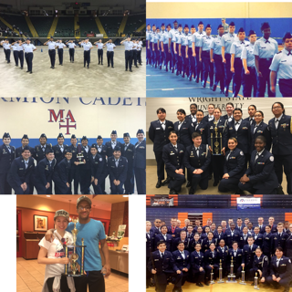
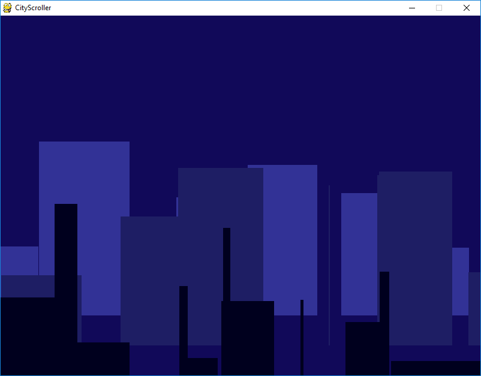

My name is Evelyn Torres. Some people call me Ev or Evie. I am 17 years old and I am from Aurora, Illinois. I am a middle child. I have an older brother, Erik, who is a junior at U of I studying electrical engineering and I have a younger sister, Eilanie, who is going into 6th grade. She plays the saxophone, volleyball, and softball.
I will be a senior this year at West Aurora High School. I run cross country and track at West, I play the euphonium in band, I will be the National Honors Society President this year, and I am the 2016-2017 Group Commander for our Air Force Junior Reserve Officer Training Corps program at West.
I am also the Unarmed Exhibtion Commander for our drill team. Along with Exhibtion, I am on the Varsity Unarmed Infantry Drill Regulation team and I am right guard on the Varsity Girls Color Guard. I love hanging out with friends and just living life. So, yeah that's just a little bit about me!
Now that I have introduced myself, I would like to show you some of the things we have created through Girls Who Code.
We created the dancing robot with C++ through Arduino. C++ isn't the only language we have used. We have also learned Python and Pygame. We even made this super cool City Sroller with Pygame.
